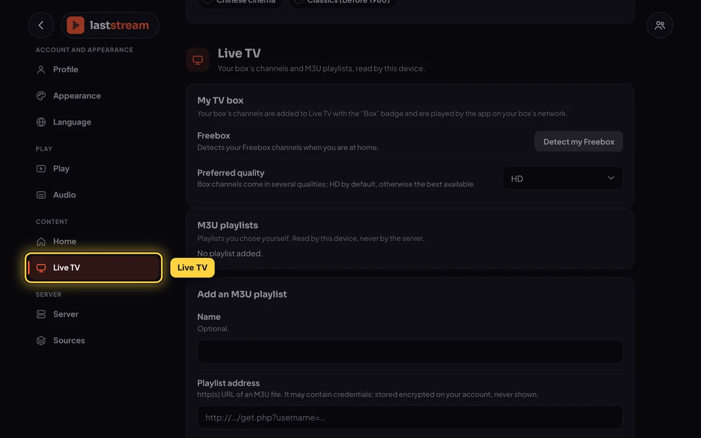
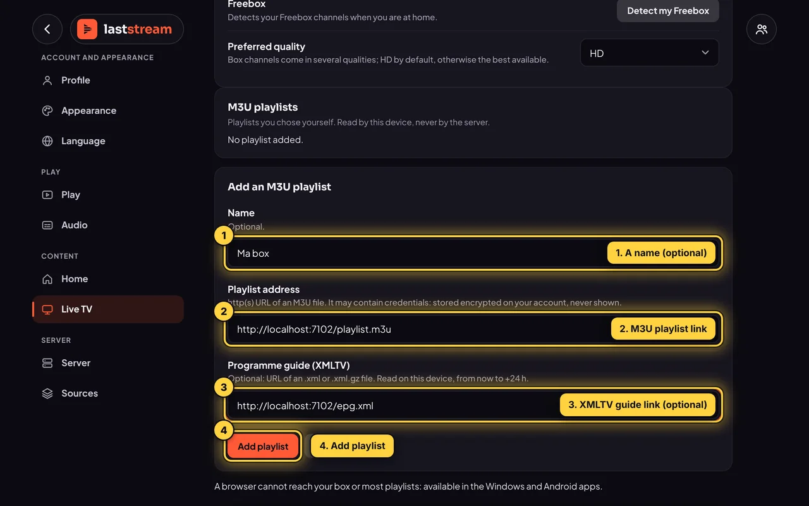
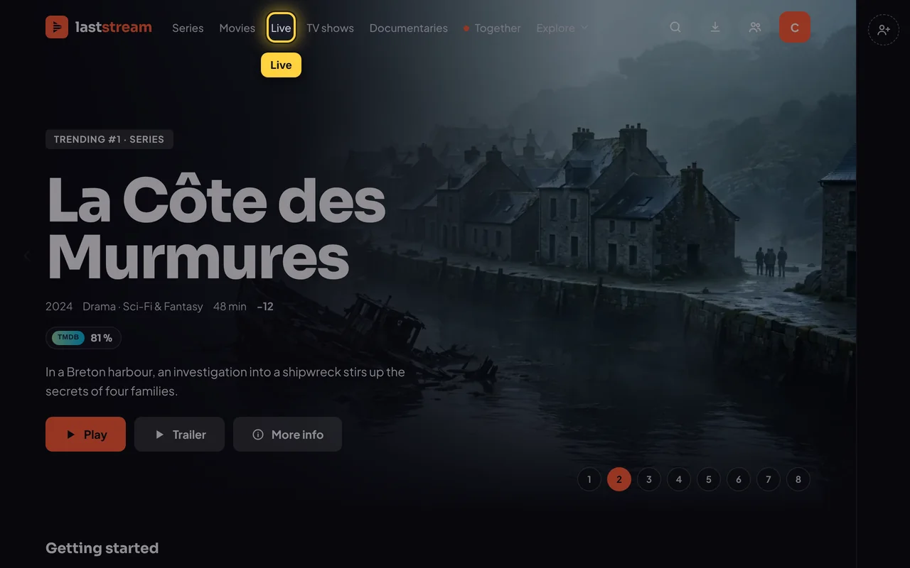
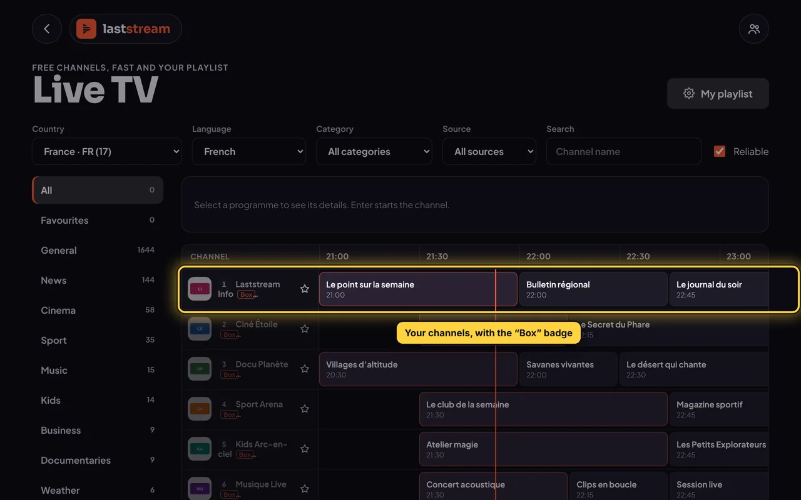
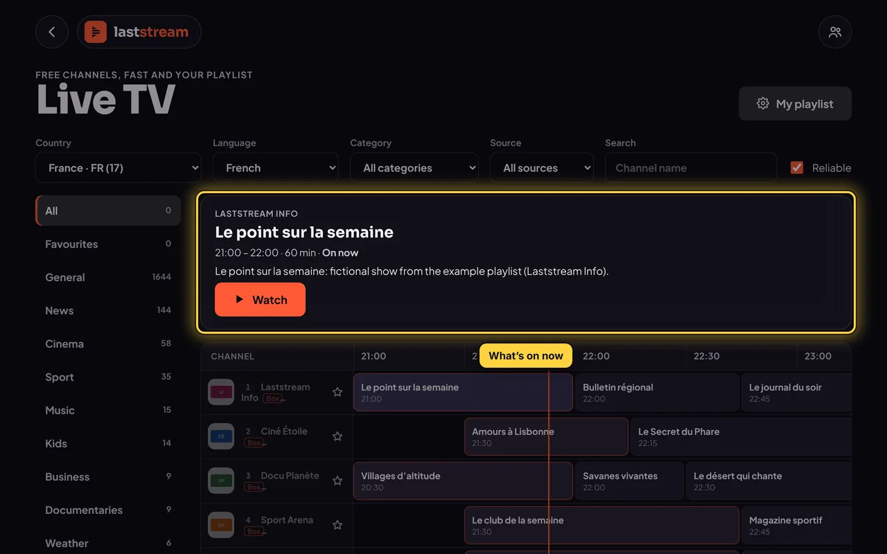

Before you start
- The Windows or Android app: a browser cannot reach most playlists.
- Your M3U playlist address (and, if you have one, the XMLTV guide address).
Steps
On each screenshot, the yellow frame shows where to tap or click; the numbers give the order. The app is in French: the screenshots show its English translation.
-
Tap your avatar, then “Settings”, then “Live TV” in the left column.

-
In “Add an M3U playlist”, fill in a name (1, optional), the “Playlist address” (2) and, if you have it, the “Programme guide (XMLTV)” (3,
.xmlor.xml.gz).Tap “Add playlist” (4). You can also “Import a file” (
.m3u) from the device.
-
Once the “… channels added, guide updated” message shows, go back home and open the “Live” tab.

-
Your channels appear with the “Box” badge, with their programmes. The left column filters by category.

-
Tap a programme to see its details, then “Watch”.

Expected format
#EXTM3U
#EXTINF:-1 tvg-id="channel1.fr" tvg-name="Channel 1" tvg-logo="https://example.com/logo1.png" group-title="General" tvg-chno="1",Channel 1
https://example.com/live/channel1.m3u8The first line must be #EXTM3U. Each #EXTINF is followed by the stream address (http, https, rtsp, rtp or udp). group-title gives the category, tvg-chno the number (1 to 9999), tvg-id links to the XMLTV guide.
| Limit | Value |
|---|---|
| Playlist size | 20 MB |
| Loading timeout | 20 s |
| Automatic refresh | every 24 h |
| Playlists per account | 20 |
| Programme guide | from now to +24 h |
If it does not work
- “This address does not return an M3U playlist.” → the address points to a web page or a file in another format.
- “No channel found in this playlist.” → empty or malformed file.
- “Address unreachable” → check the address and your connection (and your box’s network for a Freebox).
- In a browser → a web browser cannot reach most playlists: use the Windows or Android app.
The app shows these messages in French.